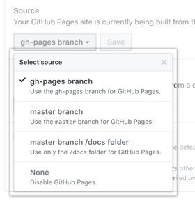

Сборка и публикация документации
Выбор и настройка шаблона MkDocs
По умолчанию проект Foliant конвертируется в HTML с помощью шаблона mkdocs.
Чтобы сменить шаблон:
- Выберите шаблон на странице MkDocs Themes.
- Установите шаблон. Например, шаблон Materials:
pip install mkdocs-material. - Откройте конфигурационный файл foliant.yml и добавьте строки:
theme:
name: 'material'
Шаблон настраивается в файле foliant.yml. Описание параметров см. в документации для конкретного шаблона. Например, для шаблона Materials см. статью Getting Started.
При необходимости можно создать собственный шаблон. Подробнее см. статью Custom themes.
Локальная сборка сайта
Чтобы локально собрать сайт:
- Выполните команду:
foliant make site --with mkdocs. В папке проекта создается папка "<Название проекта>.mkdocs". - Перейдите в папку с сайтом:
cd flnt-test.mkdocs. - Запустите веб-сервер:
python -m http.server. - В браузере откройте страницу: http://localhost:8000/.
Публикация на GitHub
Чтобы опубликовать сайт на GitHub:
- Откройте настройки репозитория и перейдите в раздел Danger Zone.
- Убедитесь, что ваш репозиторий публичный. Если нет, нажмите на кнопку Make public.
-
Перейдите в раздел GitHub Pages и в выпадающем списке Source выберите ветку gh-pages branch.

-
Выполните команду:
foliant make ghp -p my-project